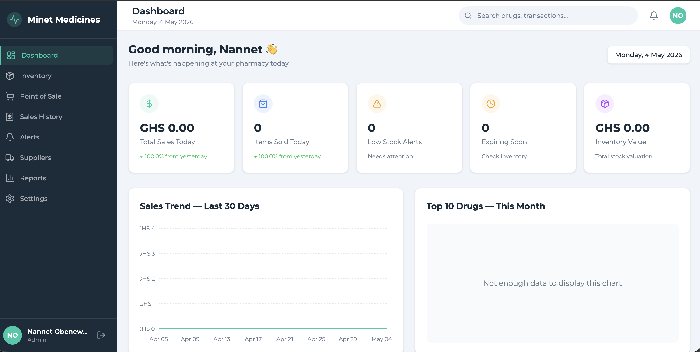
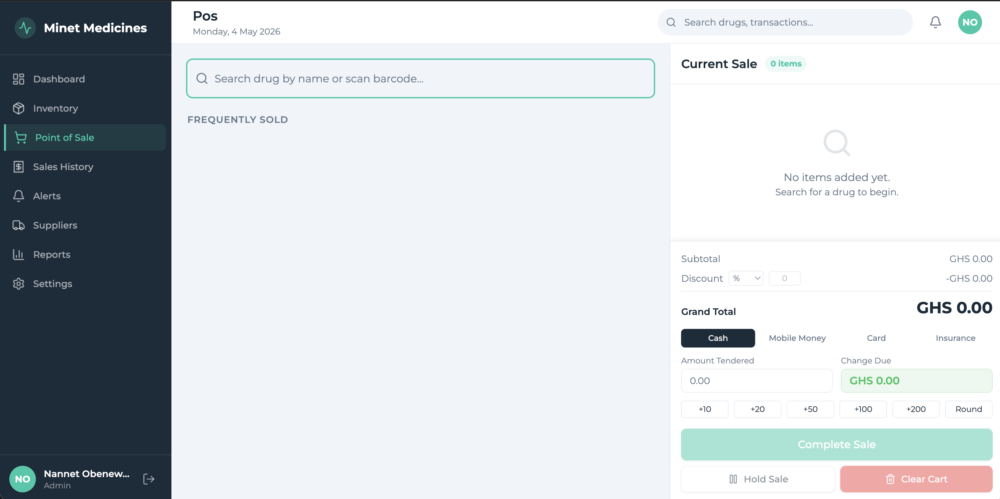
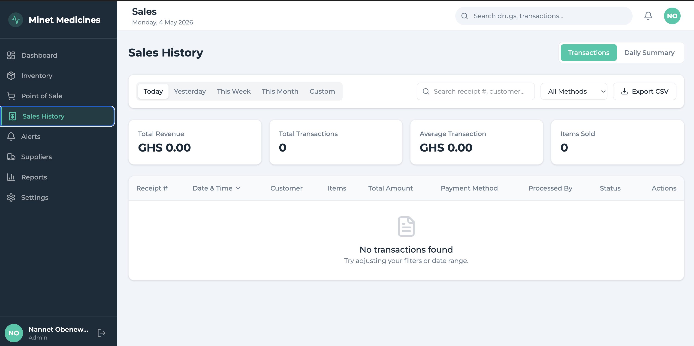
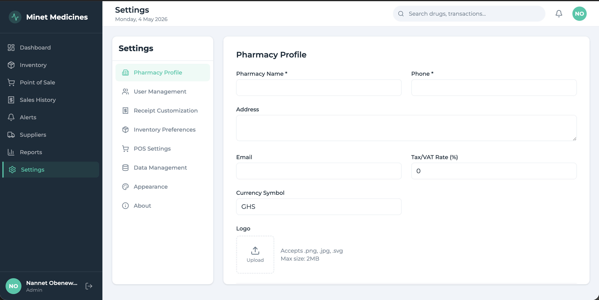

Product Design
Web App + Mobile Companion + Cloud Infrastructure
MiNet PMS is a pharmacy management ecosystem I designed and built for Minet Medicines Pharmacy, my community pharmacy in Anyinam, Eastern Region, Ghana. The system addresses a specific operational problem: managing inventory, tracking sales, and maintaining real-time oversight of a pharmacy in a rural, low-connectivity environment — without relying on expensive commercial software designed for larger urban operations.
The result is a three-part system — a web dashboard, a mobile companion app, and cloud infrastructure — working together to give me full operational visibility whether I'm on-site or thousands of miles away.
Running a community pharmacy in rural eastern Ghana comes with challenges that off-the-shelf pharmacy software doesn't account for. Internet connectivity is intermittent. Power outages are routine. The staff operating the system have varying levels of technical comfort. And commercial pharmacy management tools are priced for urban chains, not single-location community pharmacies serving a local population.
Before MiNet PMS, inventory tracking was manual, sales records were paper-based, and I had no way to monitor operations remotely — a critical gap when I was studying in Vancouver while the pharmacy continued operating in Anyinam.
I designed MiNet PMS as a three-component ecosystem:
This project started with a problem, not a technology choice. I mapped out the daily workflow at the pharmacy — what the staff does from opening to closing, where friction points exist, what information I need remotely, and what would break if connectivity dropped.
From that mapping, I defined the core requirements:
I then designed the UX flows on paper — screen-by-screen, interaction-by-interaction — before directing the development process. The entire system was built using AI-assisted development tools, with me serving as the product designer and director: defining what to build, how it should work, and what the experience should feel like, then guiding the AI through implementation, testing, and iteration.
┌─────────────────────────────────────────────────┐
│ Firebase Cloud │
│ ┌───────────┐ ┌──────────┐ ┌──────────────┐ │
│ │ Firestore │ │ Auth │ │ Cloud Fn │ │
│ │ (Real- │ │ (Secure │ │ (Alerts, │ │
│ │ time DB) │ │ Access) │ │ Summaries) │ │
│ └─────┬─────┘ └────┬─────┘ └──────┬───────┘ │
│ │ │ │ │
│ └──────────┬───┘ ┌──────┘ │
│ │ │ FCM Push │
└───────────────────┼────────────┼─────────────────┘
│ │
┌───────────┴──┐ ┌────┴───────────┐
│ MiNet PMS │ │ MiNet Live │
│ Web App │ │ Mobile App │
│ (React) │ │ (Flutter) │
│ │ │ │
│ Mac @ Shop │ │ Tab A9 + My │
│ │ │ Phone │
└──────────────┘ └────────────────┘
MiNet PMS has been in daily production use at the pharmacy since deployment. Key outcomes:
This wasn't a theoretical exercise or a class project. It's a real system solving a real problem in a real business — one I own and operate. It demonstrates:




